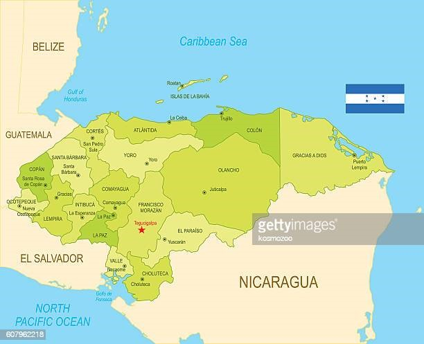
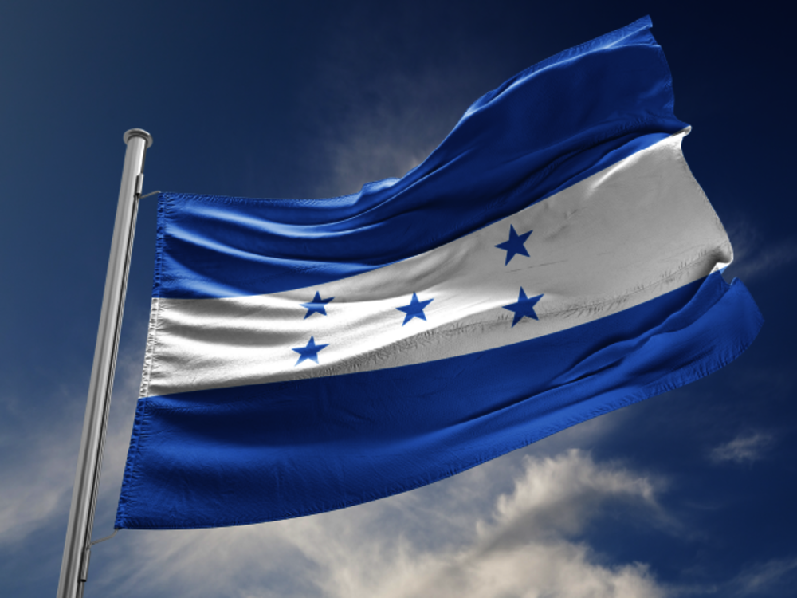

 Honduras es un estado unitario y se autodefine como libre, soberano e independiente. Limita al norte y este con el mar Caribe, al sureste con Nicaragua, al sur con el golfo de Fonseca y El Salvador, y al oeste con Guatemala,9 en cuanto a los límites marítimos colinda con México, Belice, Cuba, Islas Caimán, Guatemala, Jamaica, Colombia, Nicaragua, y El Salvador.10 La extensión territorial de Honduras, comprendiendo todas sus islas, es de 112 492 km².1
 La organización territorial de Honduras divide el país, política y administrativamente, en 18 departamentos, y estos en municipios, para un total de 298 municipios. La forma de gobierno es republicana, democrática y representativa. Se ejerce por tres poderes: Legislativo, Ejecutivo y Judicial, complementarios e independientes y sin relaciones de subordinación.1112
La población de Honduras supera los 9 millones de habitantes,131415 dedicada en su mayor parte a las actividades agropecuarias, además del comercio, manufacturas, y servicios públicos entre otras actividades. El departamento de Honduras con mayor densidad de población es Cortés con 400.3 hab./km².13El país es multiétnico, consta de cuatro grandes familias étnicas: los blancos o mestizos siendo la mayoría poblacional. Los pueblos indígenas como los lencas, misquitos, tolupanes, chortis, pech, tawahkas, garífunas y criollos de habla inglesa.
El territorio de Honduras es muy accidentado, lo forman altas filas de montañas, elevadas planicies, valles profundos en los que se encuentran llanos extensos y fértiles cruzados por ríos más o menos caudalosos y algunos navegables,16 todo lo cual contribuye a su rica biodiversidad.17Se estima que en Honduras existen unas 8000 especies de plantas, alrededor de 250 de reptiles y anfibios, más de 700 especies de aves y 110 especies de mamíferos, distribuidos en las diferentes regiones.